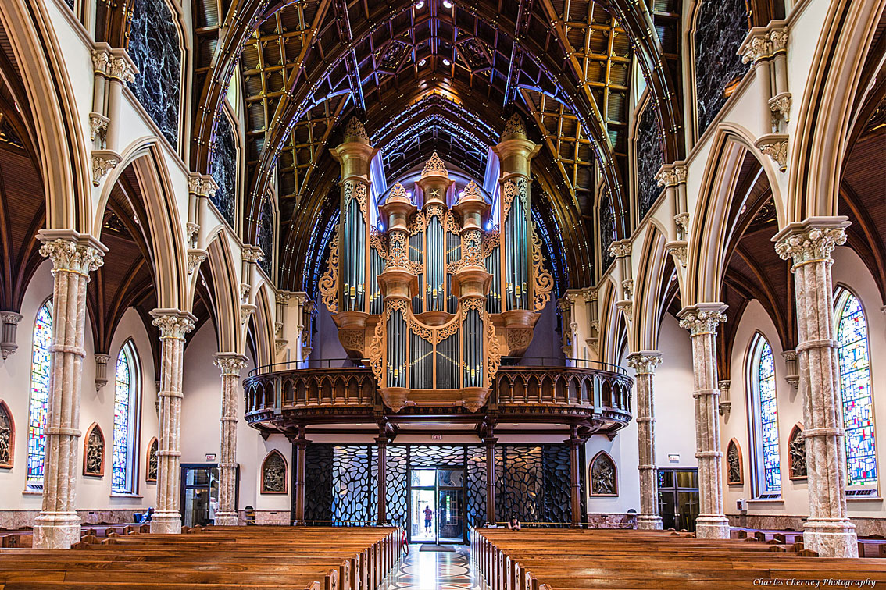
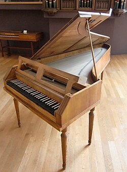
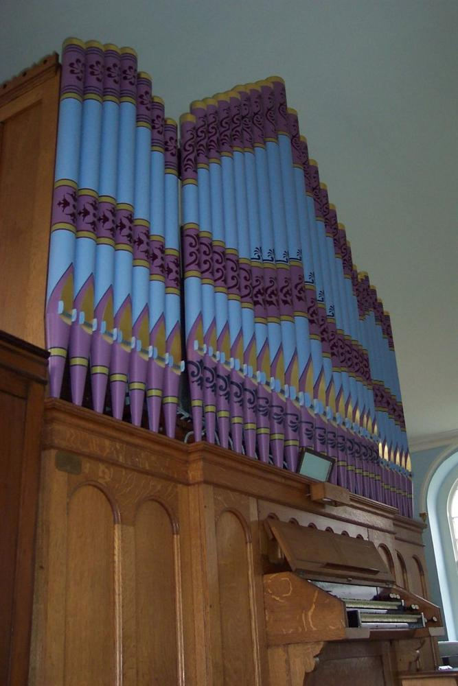
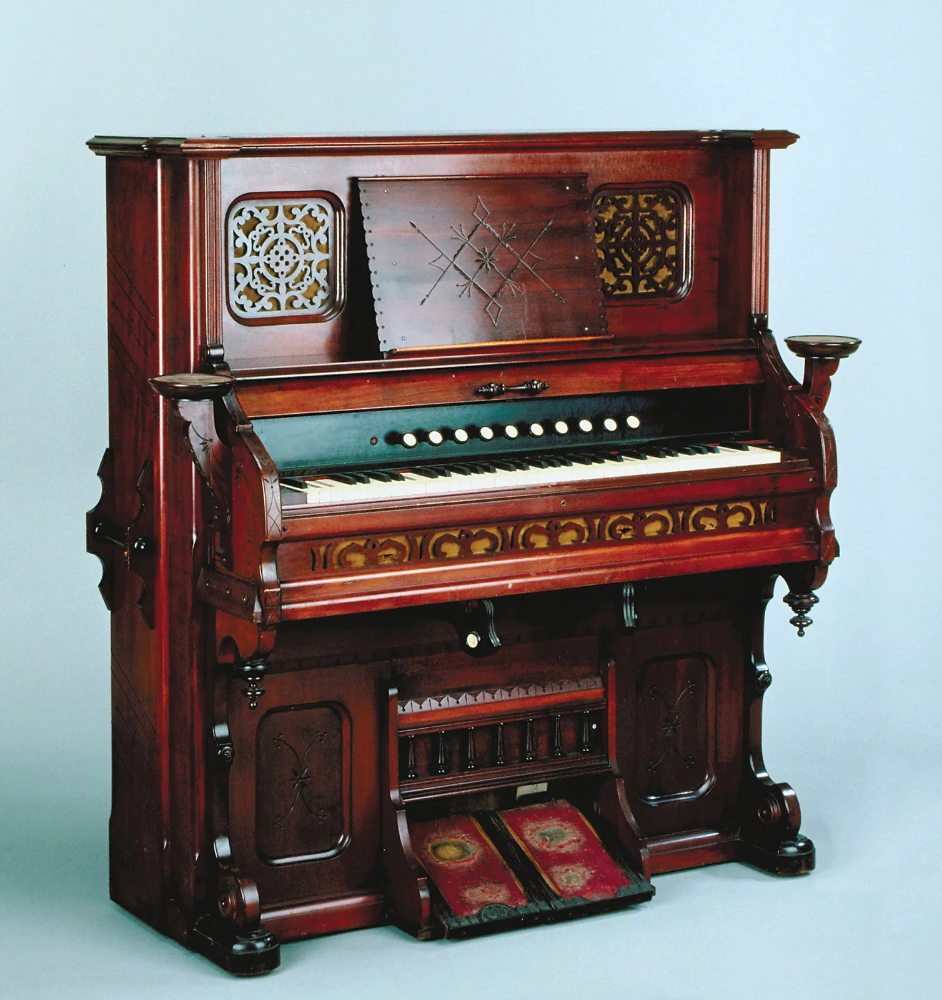
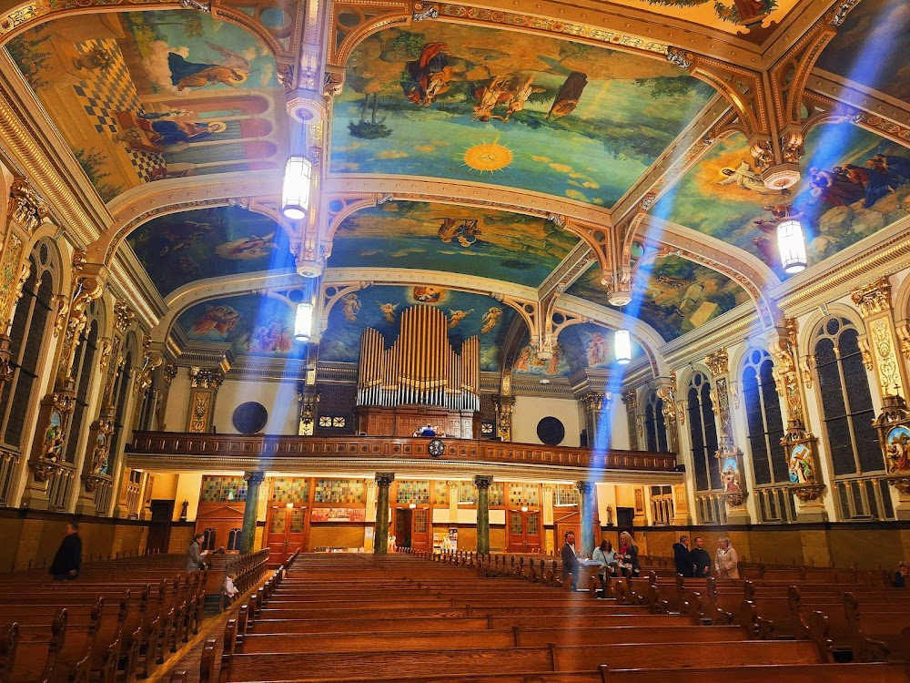

The Baroque Era (1600-1750)
Hierarchy, religion, and royal courts dominated daily life. Large pipe organs were symbols of power in churches. Music focused on strict forms, counterpoint, and spirituality (Bach, Buxtehude). Harpsichords and clavichords shaped a delicate, ornamented style. Music served aristocrats and religious services, not the general public.
Flentrop Organ @ Holy Name Cathedral, ChicagoThe Classical Era (1750-1820)
People began valuing reason, clarity, and balance. The fortepiano emerged, allowing dynamics (soft/loud). Composers wrote more expressive, human-centered music (Mozart, Haydn). Public concerts grew, so music became more accessible. Organs became slightly more standardized but remained mostly church-focused.
Bosch Organ @ St Andrew Catholic, Santanyi 1750s fortepianoThe Romantic Era (1820-1900)
Society: Revolutions, industrialization, and national pride reshaped Europe. The piano became stronger, louder, and more expressive. “Symphonic organs” with orchestral-like stops appeared. Pianos entered middle-class homes, inspiring intimate character pieces (Chopin) and virtuoso works (Liszt). Organ music expanded into emotional, dramatic styles (Widor, Franck). National identity influenced musical themes and harmonies.
Old Otterbein United Methodist Church Reed Organ Example.Early 20th Century (1900-1950)
Emotion, expression, and larger, musical forms. Symphonic Organs with rich orchestral colors. Modern piano design takes shape; expressive virtuoso music.
Holy Trinity Polish Mission, Chicago An Upright Piano
An Upright Piano
Late 20th Century (1950-2000)
Technology, globalization, and new music styles. Tracker revival and digital organ development. Minimalism, experimental techniques.
 1999 Buzard Organ @ Glenview Community Church
An Upright Piano
1999 Buzard Organ @ Glenview Community Church
An Upright Piano
Context: Digital era and worldwide musical fusion.
Organ: Hybrid pipe-digital organs and restorations.
Piano: Film music, streaming culture, and modern classical.